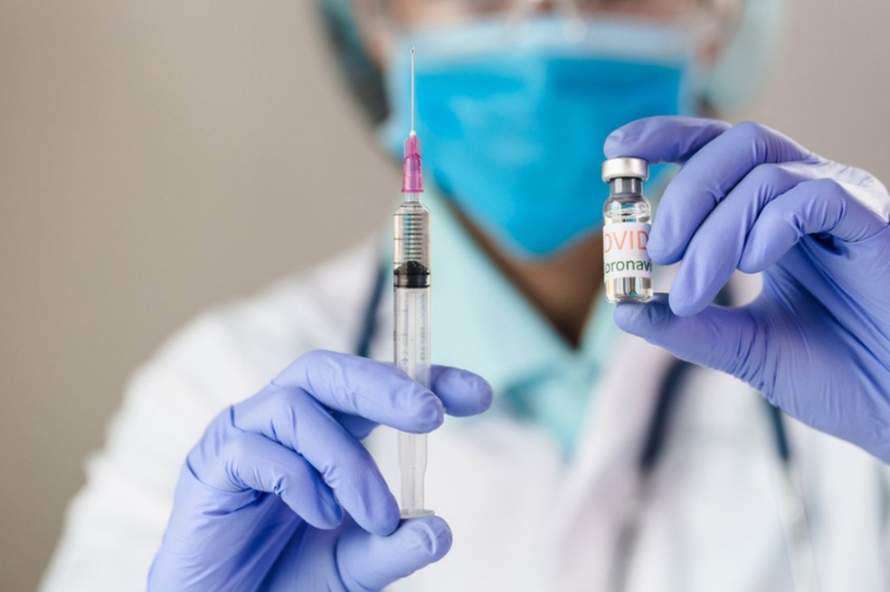
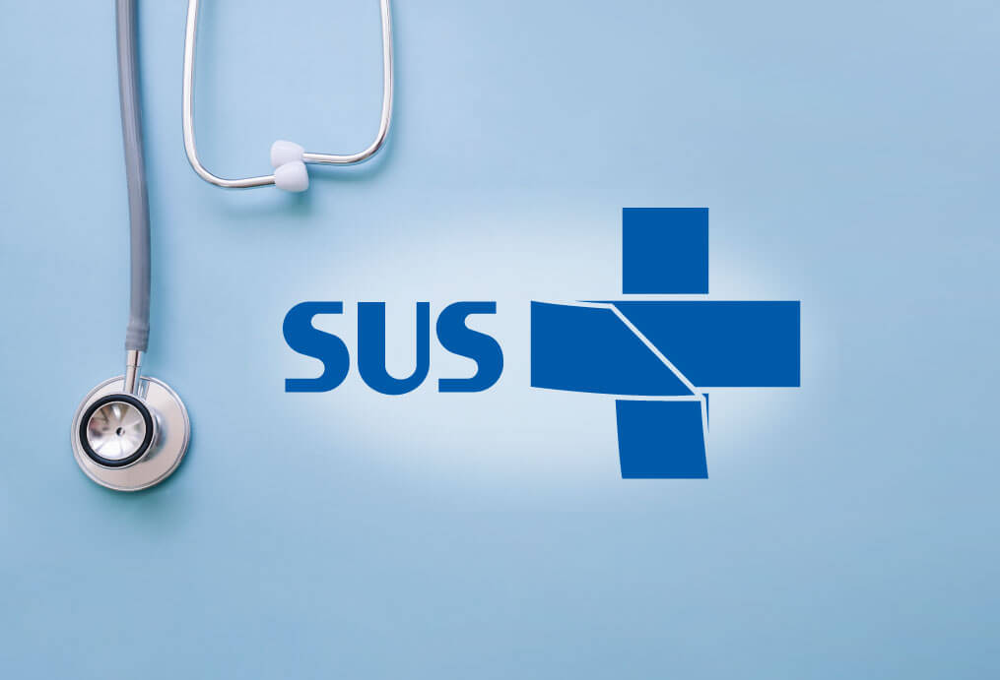
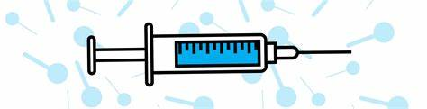

Sistema Único de Saúde (SUS):
O Sistema Único de Saúde - SUS é um dos maiores e mais complexos sistemas de saúde pública do mundo, abrangendo desde o simples atendimento para avaliação da pressão arterial, por meio da Atenção Primária, até o transplante de órgãos, garantindo acesso integral, universal e gratuito para toda a população do país.
Para ter acesso ao cadastro SUS, é só acessar o portal Saúde do Cidadão, no site “gov.br”, na aba “Meu Sus Digital” (acessando meu-sus-digital/gov.br) ou no posto de saúde mais perto de sua residência. O acesso é totalmente gratuito às ações e aos serviços de saúde pública.
Vacinação:
Você pode se vacinar gratuitamente nas salas de vacinação nas Unidades Básicas de Saúde - UBS em todo o País. Basta ir a uma unidade de saúde com cartão de vacinação. As unidades de saúde estão prontas para oferecer as vacinas necessárias em todas as fases da vida, desde a infância até a idade adulta e a terceira idade.
Perdeu o cartão? Vá à UBS onde recebeu as vacinas e faça a segunda via do seu cartão, ou solicite em uma outra unidade um novo cartão. O cartão de vacinação é o documento que comprova a sua situação vacinal. Lembre-se de guarda-lo junto aos seus documentos pessoais.
 
As vacinas disponíveis no calendário nacional de vacinação são:
- BCG;
- Hepatite B;
- Penta;
- Pólio inativada;
- Pólio oral;
- Rotavírus;
- Pneumo 10;
- Meningo C;
- Febre amarela;
- Tríplice viral (sarampo, caxumba e rubéola);
- DTP;
- Hepatite A;
- Varicela;
- Difteria e tétano adulto (dT);
- Meningocócica ACWY;
- HPV quadrivalente;
- dTpa;
- Covid-19;
- Pneumocócica 23-valente (Pneumo 23);
A vacinação é uma das maneiras mais eficazes de proteger a sua saúde e a da comunidade em que vivemos. Manter a caderneta de vacinação atualizada é um gesto de responsabilidade e solidariedade.
Campanhas da Saúde:
O Ministério da Saúde promove atualmente três campanhas de vacinação ao ano, juntamente com Secretarias de Saúde de estados, Distrito Federal e municípios. As estratégias são: vacinação contra Influenza (gripe); Multivacinação para atualização da Caderneta de Vacinação de crianças e adolescentes menores de 15 anos de idade; e a vacinação contra a covid-19 que ocorre ao longo de todo o ano
